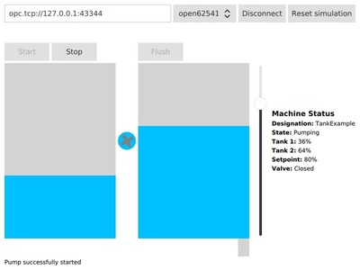

Waterpump Example
Interacting with an OPC UA server to build a QML-based HMI for a simple machine.
Waterpump shows how to use Qt OPC UA to interact with an OPC UA server to build a QML-based HMI for a simple machine.
Building the Server
Before you can use the waterpump examples, you need to build the simulation server. The simulator server project resides next to the waterpump examples. You can open and build it in QtCreator or from the terminal as usual.
The Simulation
The OPC UA server included in this example runs a simulation of a machine containing two tanks, a water pump, and a valve. Water can be pumped from the first tank into the second tank and then be flushed from the second tank by opening the valve. Both operations have a user-configurable setpoint which controls how much water is pumped to or flushed from the second tank.
The following nodes exist on the server:
| NodeId | Function |
|---|---|
| ns=2;s=Machine | The folder containing the method and variable nodes for the machine |
| ns=2;s=Machine.State | The state of the machine |
| ns=2;s=Machine.Tank1.PercentFilled | The current fill status of the first tank |
| ns=2;s=Machine.Tank2.PercentFilled | The current fill status of the second tank |
| ns=2;s=Machine.Tank2.TargetPercent | The setpoint for pumping and flushing |
| ns=2;s=Machine.Tank2.ValveState | The state of the valve of the second tank |
| ns=2;s=Machine.Designation | A human readable designation of the machine for display purposes |
| ns=2;s=Machine.Start | Call this method to start the pump |
| ns=2;s=Machine.Stop | Call this method to stop the pump |
| ns=2;s=Machine.FlushTank2 | Call this method to flush tank 2 |
All methods return Good in case of success and BadUserAccessDenied if the operation is illegal (for example, trying to start the pump if the first tank is empty).
Client Features
This example uses read, write, method calls, and data change subscriptions and shows how to set up handlers for the asynchronous operations offered by QOpcUaClient and QOpcUaNode.
Implementation
A backend class is used to handle the communication with the OPC UA server and expose the content of this server by means of properties and Q_INVOKABLE methods wrapping the OPC UA method calls.
Member Variables
A pointer to QOpcUaClient is required for connection management. An additional pointer to a QOpcUaNode object is needed for each OPC UA node the HMI interacts with. For the values of these nodes, member variables containing the last value reported by the server are added.
...
QScopedPointer<QOpcUaClient> m_client;
QScopedPointer<QOpcUaNode> m_machineStateNode;
QScopedPointer<QOpcUaNode> m_percentFilledTank1Node;
QScopedPointer<QOpcUaNode> m_percentFilledTank2Node;
QScopedPointer<QOpcUaNode> m_tank2TargetPercentNode;
QScopedPointer<QOpcUaNode> m_tank2ValveStateNode;
QScopedPointer<QOpcUaNode> m_machineNode;
QScopedPointer<QOpcUaNode> m_machineDesignationNode;
double m_percentFilledTank1;
double m_percentFilledTank2;
double m_tank2TargetPercent;
bool m_tank2ValveState;
MachineState m_machineState;
QString m_machineDesignation;
...
For each value used in the HMI, a getter, a changed signal, and a property are added to enable property bindings in QML
...
Q_PROPERTY(double percentFilledTank1 READ percentFilledTank1 NOTIFY percentFilledTank1Changed)
Q_PROPERTY(double percentFilledTank2 READ percentFilledTank2 NOTIFY percentFilledTank2Changed)
Q_PROPERTY(double tank2TargetPercent READ tank2TargetPercent NOTIFY tank2TargetPercentChanged)
Q_PROPERTY(OpcUaMachineBackend::MachineState machineState READ machineState NOTIFY machineStateChanged)
Q_PROPERTY(bool tank2ValveState READ tank2ValveState NOTIFY tank2ValveStateChanged)
Q_PROPERTY(bool connected READ connected NOTIFY connectedChanged)
Q_PROPERTY(QString machineDesignation READ machineDesignation NOTIFY machineDesignationChanged)
Q_PROPERTY(QString message READ message NOTIFY messageChanged)
...
Asynchronous Handlers
The asynchronous API of Qt OPC UA requires signal handlers for all operations.
Data change subscriptions report their updates using QOpcUaNode::attributeUpdated. A handler connected to this signal gets the new value as QVariant and can write that value to a variable or emit a signal with the new value, for example.
void OpcUaMachineBackend::percentFilledTank1Updated(QOpcUa::NodeAttribute attr, const QVariant &value) { Q_UNUSED(attr); m_percentFilledTank1 = value.toDouble(); emit percentFilledTank1Changed(m_percentFilledTank1); }
A read operation emits the QOpcUaNode::attributeRead signal on completion. The client has to check the status code and then get the result from the node.
void OpcUaMachineBackend::machineDesignationRead(QOpcUa::NodeAttributes attr) { if (attr & QOpcUa::NodeAttribute::Value) { // Make sure the value attribute has been read if (m_machineDesignationNode->attributeError(QOpcUa::NodeAttribute::Value) == QOpcUa::UaStatusCode::Good) { // Make sure there was no error m_machineDesignation = m_machineDesignationNode->attribute(QOpcUa::NodeAttribute::Value).toString(); // Get the attribute from the cache emit machineDesignationChanged(m_machineDesignation); } } }
Interaction with the Server
In the constructor, a QOpcUaProvider is created and the available backends are saved to provide a model for the backend selection dropdown menu.
...
QOpcUaProvider provider;
setBackends(provider.availableBackends());
...
Before attempting a connection, a QOpcUaClient with the selected backend is created. Its QOpcUaClient::endpointsRequestFinished signal is connected to the backend's requestEndpointsFinished slot. The QOpcUaClient::stateChanged signal must be connected to the backend's clientStateHandler slot.
void OpcUaMachineBackend::connectToEndpoint(const QString &url, qint32 index) { if (m_connected) return; QOpcUaProvider provider; if (index < 0 || index >= m_backends.size()) return; // Invalid index if (!m_client || (m_client && m_client->backend() != m_backends.at(index))) { m_client.reset(provider.createClient(m_backends.at(index))); if (m_client) { QObject::connect(m_client.data(), &QOpcUaClient::endpointsRequestFinished, this, &OpcUaMachineBackend::requestEndpointsFinished); QObject::connect(m_client.data(), &QOpcUaClient::stateChanged, this, &OpcUaMachineBackend::clientStateHandler); } } if (!m_client) { qWarning() << "Could not create client"; m_successfullyCreated = false; return; } m_successfullyCreated = true; m_client->requestEndpoints(url); }
The OpcUaMachineBackend::requestEndpointsFinished slot receives the list of available endpoints on the server and starts a connection to the first entry in the list. If there are no available endpoints, the connection establishment is aborted.
void OpcUaMachineBackend::requestEndpointsFinished(const QList<QOpcUaEndpointDescription> &endpoints) { if (endpoints.isEmpty()) { qWarning() << "The server did not return any endpoints"; clientStateHandler(QOpcUaClient::ClientState::Disconnected); return; } m_client->connectToEndpoint(endpoints.at(0)); }
clientStateHandler acts on QOpcUaClient being connected or disconnected. In case of a successful connection, the node member variables created before are filled with node objects.
...
if (state == QOpcUaClient::ClientState::Connected) {
setMessage("Connected");
// Create node objects for reading, writing and subscriptions
m_machineNode.reset(m_client->node("ns=2;s=Machine"));
m_machineStateNode.reset(m_client->node("ns=2;s=Machine.State"));
m_percentFilledTank1Node.reset(m_client->node("ns=2;s=Machine.Tank1.PercentFilled"));
m_percentFilledTank2Node.reset(m_client->node("ns=2;s=Machine.Tank2.PercentFilled"));
m_tank2TargetPercentNode.reset(m_client->node("ns=2;s=Machine.Tank2.TargetPercent"));
m_tank2ValveStateNode.reset(m_client->node("ns=2;s=Machine.Tank2.ValveState"));
m_machineDesignationNode.reset(m_client->node("ns=2;s=Machine.Designation"));
...
After all node objects have been created, the data change handlers are connected to the node objects and monitoring is enabled.
...
// Connect signal handlers for subscribed values
QObject::connect(m_machineStateNode.data(), &QOpcUaNode::dataChangeOccurred, this, &OpcUaMachineBackend::machineStateUpdated);
QObject::connect(m_percentFilledTank1Node.data(), &QOpcUaNode::dataChangeOccurred, this, &OpcUaMachineBackend::percentFilledTank1Updated);
QObject::connect(m_percentFilledTank2Node.data(), &QOpcUaNode::dataChangeOccurred, this, &OpcUaMachineBackend::percentFilledTank2Updated);
QObject::connect(m_tank2TargetPercentNode.data(), &QOpcUaNode::dataChangeOccurred, this, &OpcUaMachineBackend::tank2TargetPercentUpdated);
QObject::connect(m_tank2ValveStateNode.data(), &QOpcUaNode::dataChangeOccurred, this, &OpcUaMachineBackend::tank2ValveStateUpdated);
// Subscribe to data changes
m_machineStateNode->enableMonitoring(QOpcUa::NodeAttribute::Value, QOpcUaMonitoringParameters(100));
m_percentFilledTank1Node->enableMonitoring(QOpcUa::NodeAttribute::Value, QOpcUaMonitoringParameters(100));
m_percentFilledTank2Node->enableMonitoring(QOpcUa::NodeAttribute::Value, QOpcUaMonitoringParameters(100));
m_tank2TargetPercentNode->enableMonitoring(QOpcUa::NodeAttribute::Value, QOpcUaMonitoringParameters(100));
m_tank2ValveStateNode->enableMonitoring(QOpcUa::NodeAttribute::Value, QOpcUaMonitoringParameters(100));
...
The machine designation is not supposed to change and will be read once at startup.
...
// Connect the handler for async reading
QObject::connect(m_machineDesignationNode.data(), &QOpcUaNode::attributeRead, this, &OpcUaMachineBackend::machineDesignationRead);
// Request the value attribute of the machine designation node
m_machineDesignationNode->readAttributes(QOpcUa::NodeAttribute::Value);
...
A setter for the setpoint is added to the backend.
void OpcUaMachineBackend::machineWriteTank2TargetPercent(double value) { if (m_tank2TargetPercentNode) m_tank2TargetPercentNode->writeAttribute(QOpcUa::NodeAttribute::Value, value); }
For the methods, wrappers which call the OPC UA server method are created.
void OpcUaMachineBackend::startPump() { m_machineNode->callMethod("ns=2;s=Machine.Start"); }
The HMI
A backend instance is created and handed to the QML part as a context property named uaBackend.
...
OpcUaMachineBackend backend;
QQmlApplicationEngine engine;
engine.rootContext()->setContextProperty("uaBackend", &backend);
...
The properties, signals and Q_INVOKABLE methods of uaBackend can now be accessed by the QML code. For example, the button to flush the second tank is enabled only if the backend is connected to the server, the machine is idle and the tank level is above the setpoint. On click, the flushTank2() method is called on the server.
Button {
id: flushButton
text: "Flush"
enabled: uaBackend.connected && uaBackend.machineState === OpcUaMachineBackend.MachineState.Idle && uaBackend.percentFilledTank2 > uaBackend.tank2TargetPercent
onClicked: {
uaBackend.flushTank2()
}
}
Signals from the backend can also be used directly in the QML code.
Connections {
target: uaBackend
onPercentFilledTank2Changed: {
if (uaBackend.machineState === OpcUaMachineBackend.MachineState.Pumping)
rotation += 15
}
}
Usage
The server is started automatically by the HMI application. After connecting to the server by clicking the Connect button, drag the slider to set a setpoint, then click Start to start pumping water from the first tank to the second tank. After setting a setpoint lower than the current value of the second tank, a click on Flush opens the valve.
If there is no water left, click Reset simulation to refill the first tank.

Files: